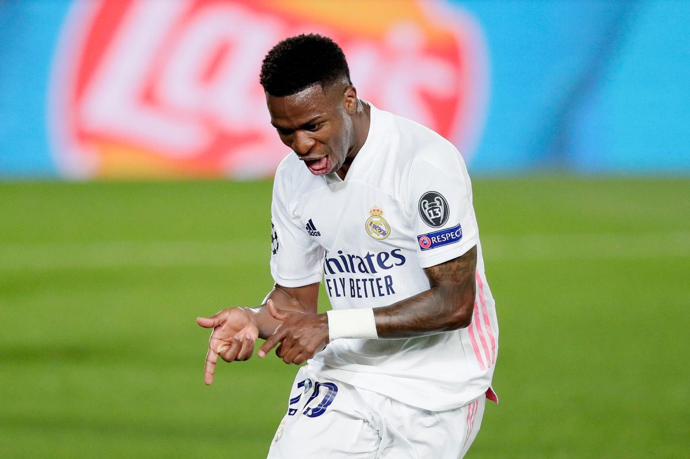

Final Score: Real Madrid 3 - 1 Liverpool
The rematch of the 2018 Champions League final played out on Tuesday with Liverpool traveling to Madrid to once again face Zinedine Zidane and his men, this time in the UCL quarterfinals. A Vinicius Junior brace and a poachers goal for Marco Asensio led Real Madrid to a relatively easy victory, with Liverpool able to scrape just one goal on their only shot on target. The resulting scoreline set the scene for what is sure to be an interesting fixture at Anfield next week. Here are five key takeaways from the match:
1. Nacho and Eder Fill in Brilliantly
With first-choice center backs Sergio Ramos and Raphael Varane both missing from the lineup, Zidane was forced to call on not one but two of his reserve center halves in Nacho Fernandez and Eder Militao. Ramos being forced out with an injury allowed Nacho a week’s preparation in advance, however, Varane’s last-minute positive COVID test added chaos into the mix as Eder Militao went from reserve option to starter mere hours before the contest. In a 90 minute masterclass, the Madrid duo held Liverpool to only one shot on target despite their relentless attacks. With many people speculating that Madrid would struggle defensively, the club showed their grit and pedigree as they glided past Liverpool. Another such performance at Anfield is sure to see Real into the semifinals, however, they are sure to have their hands full yet again.
2. Alexander-Arnold’s Woes Continue
It has been a rough month for Trent Alexander-Arnold with the Liverpool fullback coming under intense scrutiny following his absence in Gareth Southgate’s England squad. After a slow start to the season, it appeared as though the Scouser had finally found his footing again, providing a brilliant assist and keeping a clean sheet against Arsenal at the weekend. His luck did not last long, however, as his poorly-headed clearance fell straight to Marco Asensio and gave Madrid a two-goal lead Tuesday. Defending has never been a strong suit for Alexander-Arnold, but almost never was it as obvious a hindrance as it was against Madrid. Mendy and Vinicius Junior seemed to overwhelm the young defender and he was beaten easily on multiple occasions. He did, however, have two brilliant interceptions during the match, one of which cut out a sure-to-be goal. Nonetheless, this was overshadowed by his errors as has been the story of recent. If Liverpool hope to qualify for Europe next season or make a comeback in the Champions League, Trent will have to clean up his act defensively to give them a fighting chance.
3. Vinicius Junior Finds His Goals
Bagging just 4 goals in his previous 36 games this season, Madrid’s Brazilian wonderkid Vinicius Junior has had a tough time finding the back of the net. His pace down the wing and skill on the ball have made him a formidable asset to Zidane’s attack, yet he still lacked the finishing ability to keep up with the goal tallies of his fellow forwards. This was anything but the case against Liverpool as the young winger found himself tearing apart Liverpool’s inexperienced backline and scoring not once, but twice. His pace proved to be too much for the likes of Nat Phillips and Ozan Kabak, who found themselves doing everything in their power to chase down Vinicius Junior. There has been plenty of hype and scrutiny around the talented 20-year-old, but his performance on Tuesday proved to all of his haters that he is the real deal. With a potential Champions League run and a tight La Liga race ahead of them, Madrid will need Vini to keep producing performances like these if they hope to bring home some major silverware.

4. Liverpool’s Front Three Lack Former Prowess
There is no hiding the fact that it has been a down season for Liverpool’s “formidable” front three. Firmino and Mane have failed to produce the goal contributions of previous seasons and even the addition of Diogo Jota into the mix has failed to create a more efficient offense in Klopp’s system. Registering just seven shots, only one of which was on target, Liverpool’s front three went missing for most of the game, swallowed up by Madrid’s backline and midfield. In a season plagued by defensive injuries, it seemed as though the only way that Liverpool would manage success would be scoring their way out of it. Their performance against Madrid showed just why they have failed to meet many expectations, with an offense that lacks creativity and the ability to find the back of the net consistently. It might take a changing of shape or more lineup changes, but Klopp will definitely need to alter his system from what was on display Tuesday if they hope to have a chance at pulling off another comeback.
5. Anfield Awaits
Despite Madrid’s dominance throughout the game, Liverpool were lucky enough to scrape away an away goal to keep things interesting for the reverse fixture next week. Because of this goal, it now means that a 2-0 victory will be enough to move the Reds on to the semifinals, rather than needing a 4-0 win or better had they failed to score. Anfield has been home to plenty of comebacks in the Champions League, most recently their impressive 4-0 victory over fellow La Liga side Barcelona during the club’s 2019 Champions League run. Although they have an impressive home record in the Champions League, Liverpool are tasked with making this comeback without any fans present, and they must face whatever Zinedine Zidane throws at them. The French manager is no newcomer to big games, and thus, the stage will be set for a heavyweight battle between the English and Spanish teams that is sure to be a match for the ages.